Chapter 01 — Coming up with the idea
The guide gave me a parts list. Nothing else.
I started from an online Nerf turret guide — but it was outdated, covered the bare minimum, and had no information on how to program it.
All it really provided was a materials list. Everything else — the mechanism, the wiring, the code and the app — I had to research and work out myself.
Chapter 02 — Creation
Planned on paper, built in cardboard.
Before building anything, I drew every part to scale so everything was planned out ahead of time — the base mount, the magazine, and the mounts for the DC motors, the continuous 360° servo and the 180° servo.
The prototype was built from cardboard, which kept it fast and cheap to iterate on — even if cardboard doesn't always come out as intended.
- Spin upTwo DC motors spin in opposite directions to act as flywheels.
- FeedA servo pushes a dart from the magazine into the spinning motors.
- LaunchThe flywheels grip the dart and fire it out.
Plans & first parts
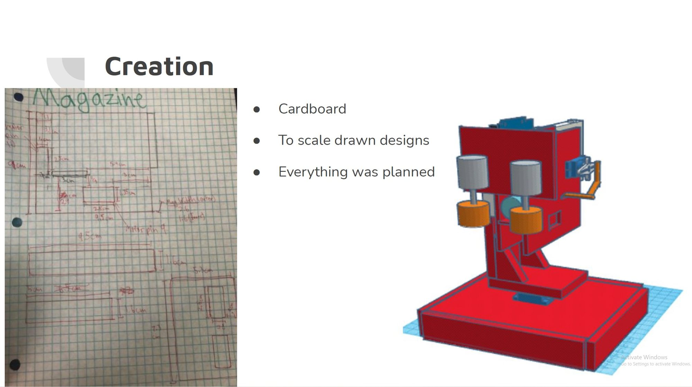
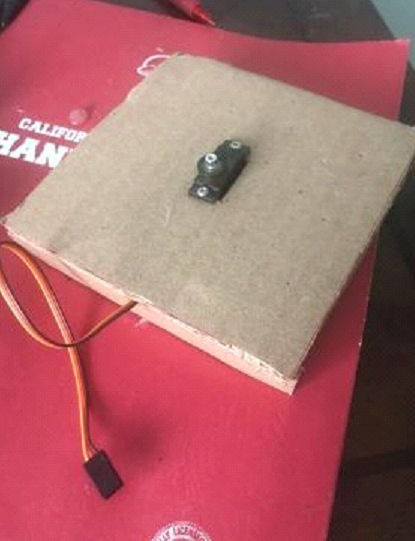
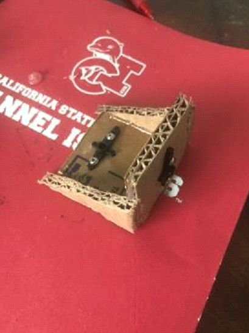
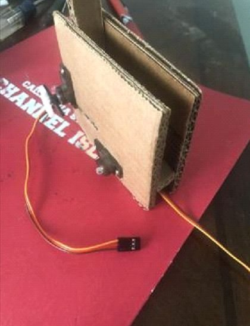
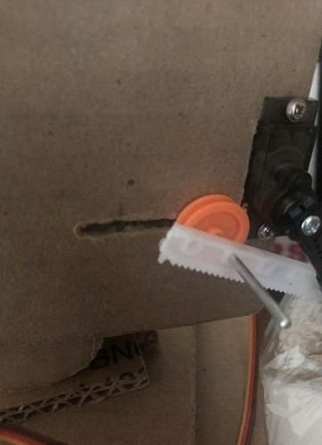
Chapter 03 — Problems
First version: it didn't work.
What went wrong
- Both servos on the same sideThe layout put both servo motors next to each other.
- Blocked pusherThe motor that pushes out the darts was physically blocked.
- Weight & stabilityPoor weight distribution made the whole turret unstable.
The fix
- Follow the arcI redesigned the mount so it follows the arc of the magazine.
- SupportedThe new layout successfully supports the mechanism and clears the pusher.
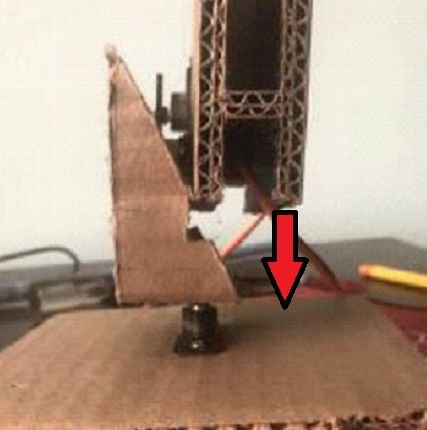
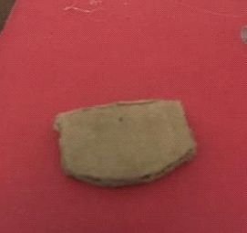
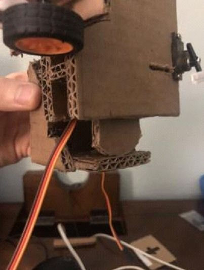
Chapter 04 — Put together
Wiring it up.
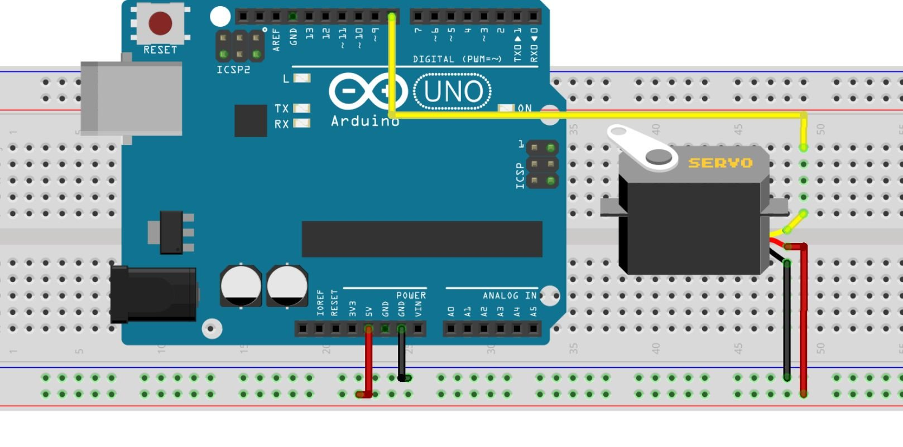
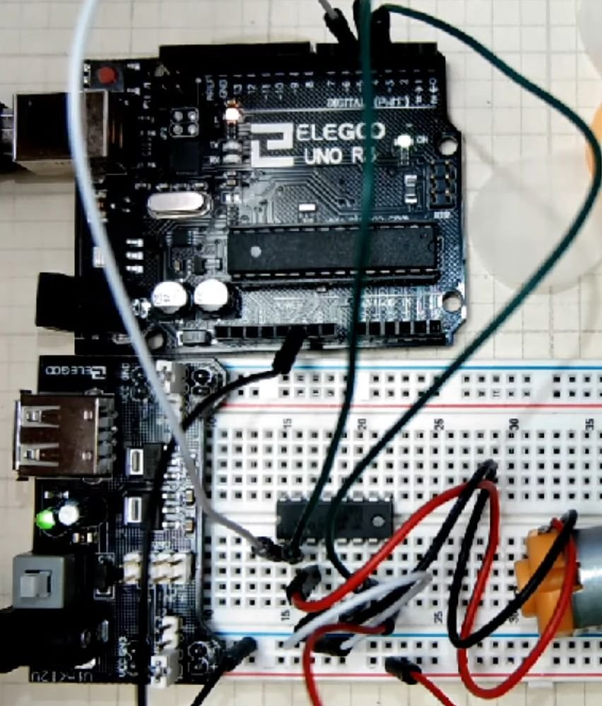
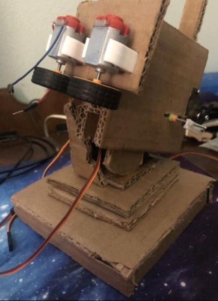
Chapter 05 — Programming the app
A phone app, built with blocks.
I built the controller app in MIT App Inventor using block code. It was easy to use, though getting the alignment and sizing right was a little difficult.
- ConnectLists available Bluetooth devices and connects to the turret.
- StatusUpdates on a timer and shows whether Bluetooth is connected.
- ControlSends strings that are converted to ASCII characters on button pushed, released and clicked.
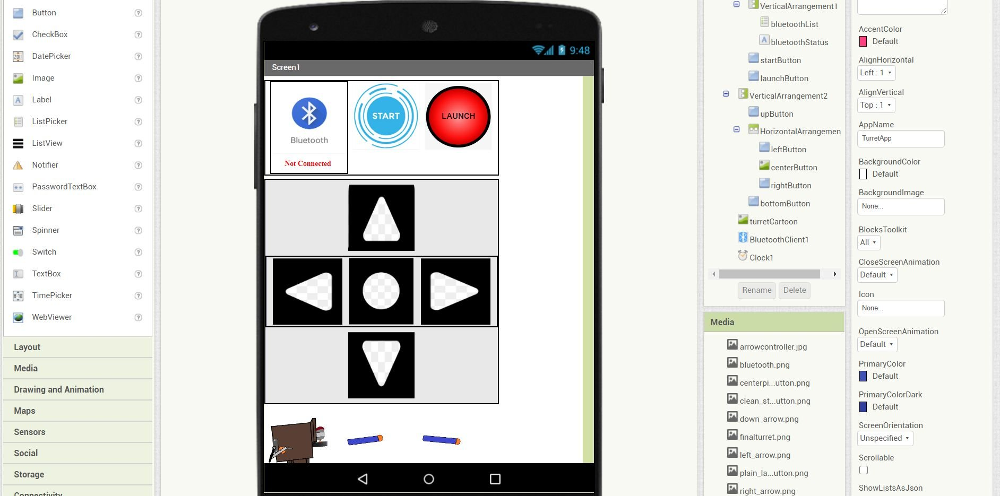
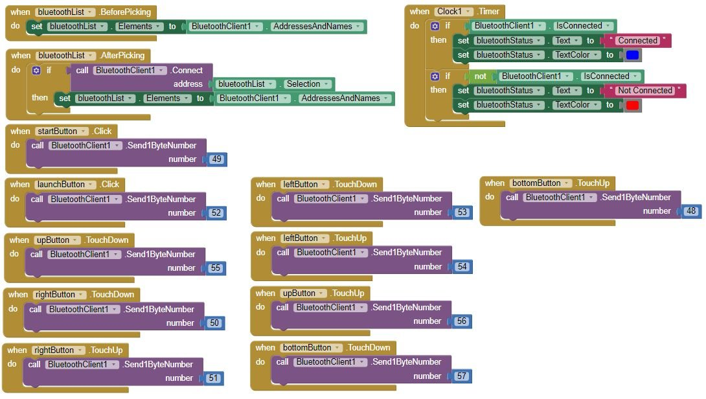
Chapter 06 — Programming the Arduino
Every movement at once.
The Arduino side uses Servo.h for servo commands and SoftwareSerial.h to send bytes back and forth with the app. Pins and motor speeds are all set in variables at the top, so the whole program can be tuned from one place.
On startup it sets up every pin, opens serial communication and moves all the motors to their starting positions. In the loop, Serial.available checks for a link and Serial.read takes in commands. Each command flips a set of booleans, and because everything runs through independent if statements, the turret can make multiple movements simultaneously — stepping in 1° increments with microsecond delays.
Chapter 07 — Final thoughts
Difficulty 7/10. Fun 9/10.
The hardest part was the design — there are so many factors to keep in mind, all while working in cardboard. The research was tedious, and sometimes there was no answer to find, so I had to use my best judgement.
The whole process was fun, especially the small wins: getting a motor to work, finishing each part, and figuring out fixes within my limitations. The best part is when everything finally comes together — which is also the worst part, because then there's nothing left to work on.
- CircuitsBuilding circuits and working with DC and servo motors.
- PowerKeeping components from being overloaded, and reading power resistors.
- 3D design & appsDesigning parts virtually, and what it takes to make an app.
- ResearchGreatly improved research skills.